Generations of people have enjoyed playing the Memory Tile Game, often known as the Concentration or Matching Game, because to its cognitive advantages, which include enhancing short-term memory, attention skills, visual perception, spatial reasoning, and problem-solving abilities, it has been adored by individuals of all ages and ability levels.
The game starts with even number of cards turned upside down having the same pattern so they all look the same. In one turn user can choose two cards and turn them over, if the pattern on both the cards comes out to be similar, those cards are eliminated from the pile and if they are different they are turned over again and user picks other two cards in the next round. Successful match results in awarding of points and time but unsuccessful match is also helpful because it tells the player what pattern is beneath which card and this information helps them to find the second card in order to match the pattern present on the first one in the subsequent round.
This game probably originated a long time ago before the era of internet therefore people would have physical cards that they would shuffle and place on a flat surface everytime they wanted to play the game but as soon as internet and web applications came into picture TIle game also got picked up by the wave of creation and creativity and found it’s way on computer screens where the user did not have to deal with the aftermath of holding physical cards and could just play the game with no hassle.
However, out of all the web-based implementations of the Tile game that we came across none of them were eyecatching enough for us to play the game with the same amount of zeal we used to back in the day. This happened because the developers just replicated the old game and made it barely functional to play. Therefore, we took it upon ourselves to redesign this game and gave the game a complete makeover with the help of HCI principles we studied about in the course resulting in a fresh interface of the old game, with changes like animations of tiles turning over, cool and awesome patterns underneath the tiles and added many more features which are found in the latter part of our report in detail.
Once the redesign was carried out successfully, we created a navigational map of the game, stating everything a user might come across when they play the game starting from the very beginning i.e. loading the game going though all the options provided in the game, how to play the game and finally how to quit the game because it would help the reader in navigating throught the game with no complication.
Furthermore, we evaluated our game on the basis of the heuristic evaluation we defined and presented them in a dynamic way such that the reader would themselves be able to rate the game on the parameters and able to find the new rating in real time based upon their feedback of the game. Lastly, we put forward various ideas that can be implemented in the future in order to enhance the game even more in terms of usability and user experience and increase the playability of the game.
Game Screen’s & Navigational Map
The Game Screen’s for the Tile Memory Game are as follows:
Home Screen:
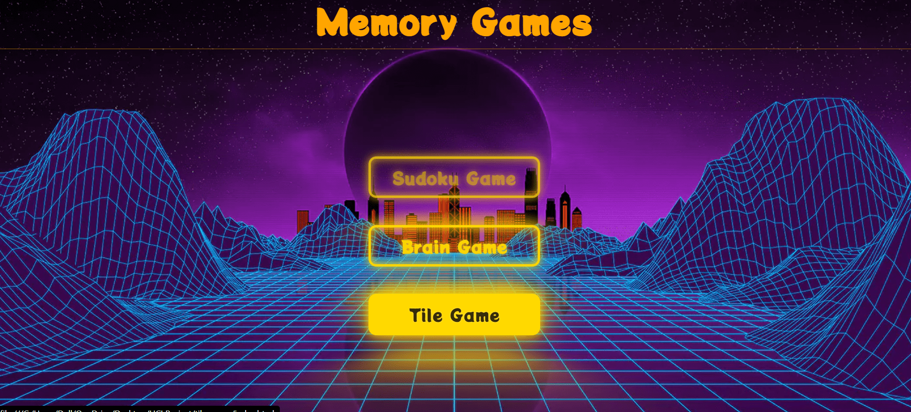
This is the home screen for the three games, users would have to click on the tile game
button in order to play that game.
Main Menu:
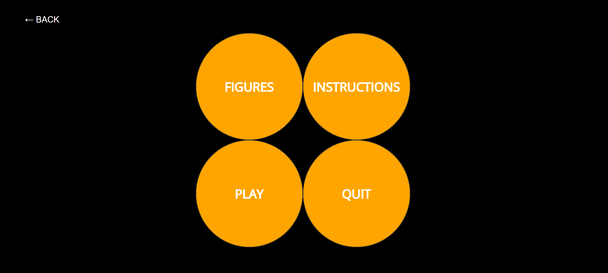
This is the layout of the tile game, Figures provide us with game related statistics such as number of games won/lost, best time in every difficulty level etc. Quit button will take us back to the home screen.
Figures Button
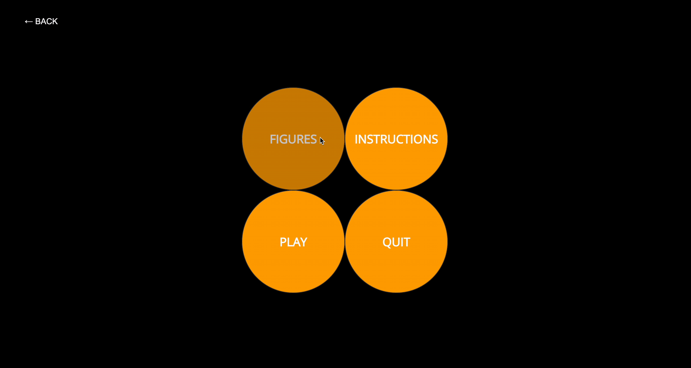
When the user clicks on the figures button, it turns over to show the history of how the game was played, how many times did the user win, lost or abandoned the game. It also shows the high score in terms of time taken to finish every difficulty level and lastly, it shows a cumulative stat of total number of pairs turned over, how many of those pairs were correct and how many of them were incorrect. This gives the user an idea about their performance, how can they improve it in order to improve these statistics and gives a sense of achievement when they look at these numbers.
Instructions Button
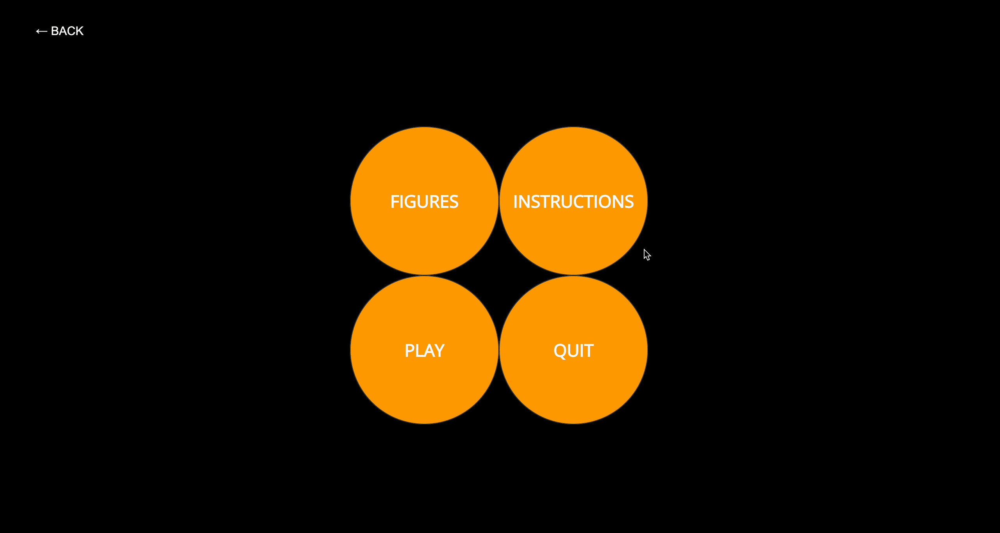
On clicking the Instructions button, we will get the instructions to play the game.
Play Button
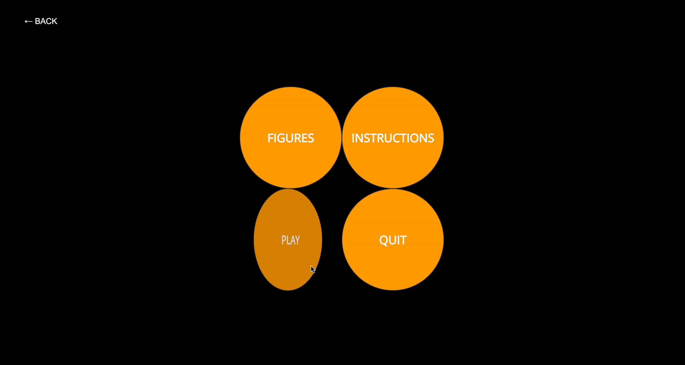
When the users clicks on the play button, they get to choose the difficulty level they want to play the game in which consists of casual, medium and hard. As the difficulty increases number of tiles to match increases, different icons for pair matching are introduced and time given to complete the game also increases.
Game Screen
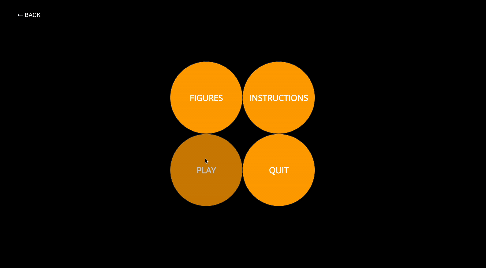
When the user clicks on any of the above mentioned difficulty level to play the game in, they are see a number of tiles depending upon the level they chose.
Pausing the Game
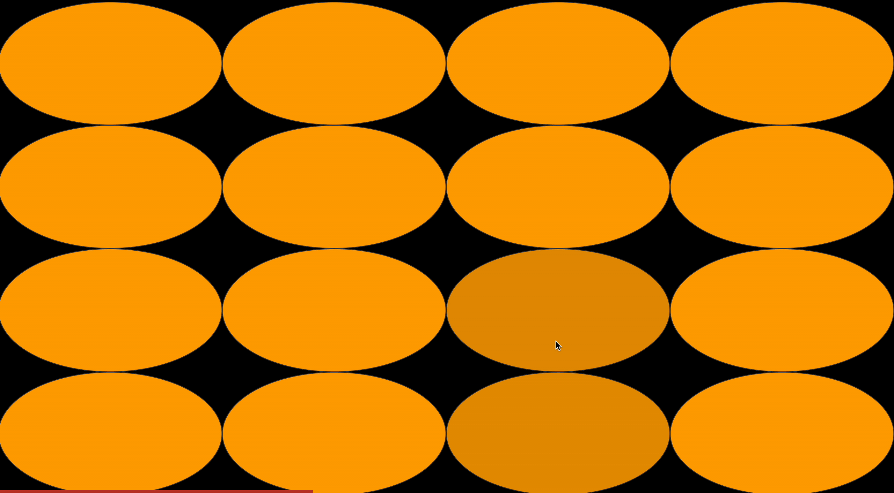
The user can press the “p” button on the keyboard as mentioned in the instructions to stop the timer from running out and press ’p” again to resume the game.
Complete Navigational Map
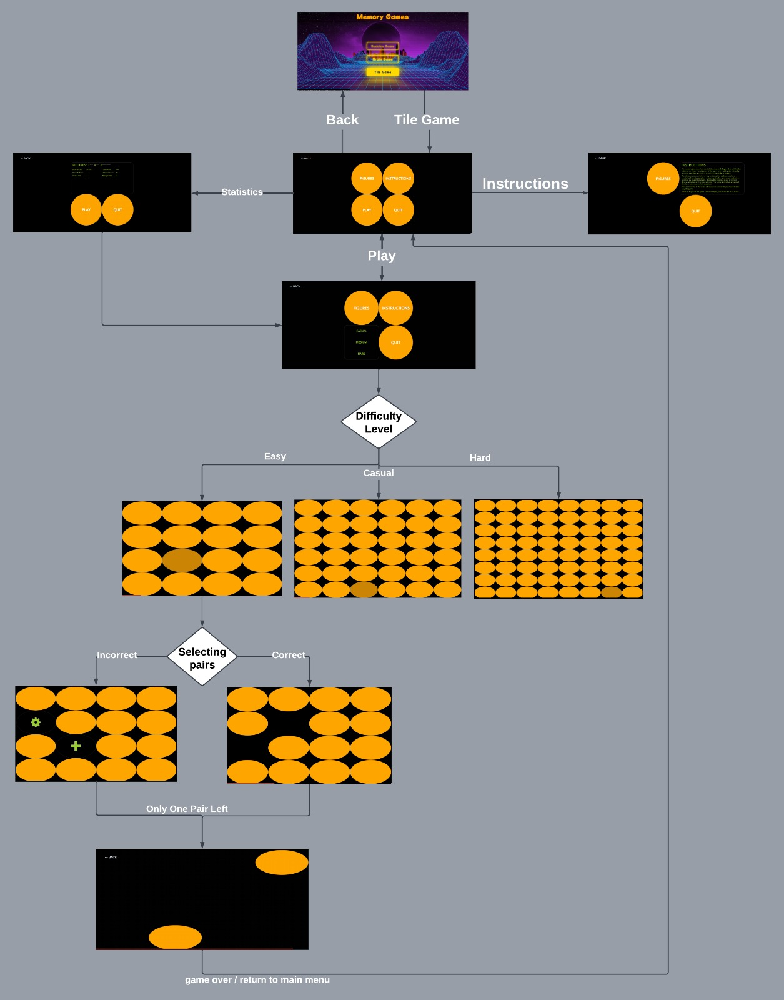
The above image represents the complete navigational map of the Tile Memory Game.
Redesign Information
Redesigns in the Game
This section of our report contains what redesigns and functionalities we have added to Tile Game
We redesigned the entire user interface of the game and made it visually appealing, faster and minimalistic.
The game did not have any menus before we made a home menu with four buttons which are play, quit, figures & instructions.
The game now offers three difficulty modes which are easy, medium & hard, earlier there were no diffulty modes.
The game did not have animations earlier, we in our redesign have incorporated intense use of animations.
The redesigned game now has a timer right below the tiles, which is represented by an indexical semiotic in the form of a progress bar.
The user can now pause the game as per his/her convenience as we have implemented a new pause feature.
The user can now quit the game as per his convience with the press of the escape key which will take the user back to the homepage of the game.
The game now has a figures section where users can see all the satistics about their gameplay for eg his best time in hard mode, his abandoned games etc.
We have also added an instructions tile, for first time users to see the game instructions and learn to operate the game.
The game now has persistent storage, even if the user quits the entire game and restarts it, his statistics would not get lost. This will help users not lose track of the progress they have made.
Redesign Principles Used
This section of our report will contain the Human-Computer Interaction Principles we have used to redesign the Tile Memory Game.Parts of this section are interactive, please hover over highlighted words to see the images
Visibility of system status : This principle highlights the need of giving users with ongoing and unambiguous information about the system’s present condition. We considerably improved the user’s ability to grasp their available options and the game’s state by adding a
menu bar
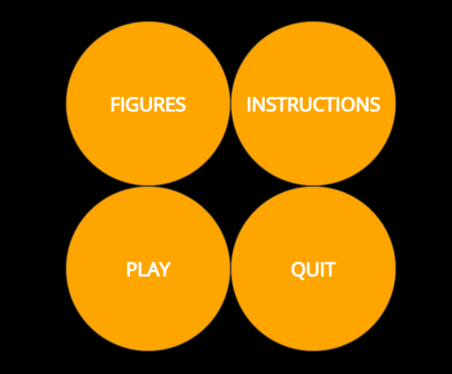
with buttons for instructions, figures, play, and quit. Players may now easily access various aspects of the game, making it more user-friendly and improving the entire experience.
Predictability : Predictability is the ability of users to anticipate the consequences of their actions in a system. The redesigned Tile Memory game enhances predictability by maintaining consistent design and behavior across the game, ensuring that users can build familiarity with the game and anticipate its reactions to their inputs.
Flexibility and efficiency of use : This concept highlights the need of accommodating a diverse variety of users with varying skill levels, experience, and preferences. We made the game flexible to each user’s needs and increased their experience by delivering a suitable challenge by offering
three difficulty options
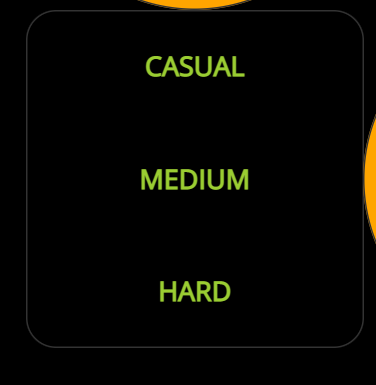
(easy, medium, and hard). This adaptability not only makes the game more appealing to a wide range of players, but it also drives them to develop their abilities and move through the difficulty levels.
Law of Symmetry : The Law of Symmetry states that humans perceive symmetrical objects as a single, unified whole. In the redesigned Tile Memory game, this principle is implemented by using symmetrical design elements, such as the layout of the tiles and buttons, enhancing the visual appeal and organization of the interface.
Feedback : This principle underscores the significance of providing users with clear, timely, and relevant information about the outcomes of their activities. We give users with vital feedback on their progress, accomplishments, and places for growth by integrating a
figures section
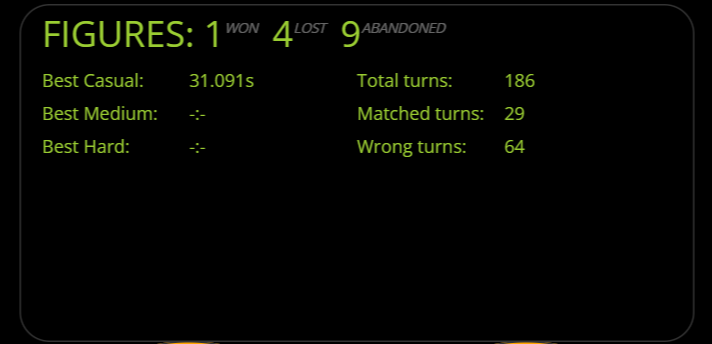
with statistics on the player’s performance. This can assist users in understanding how well they are performing, setting personal objectives, and staying inspired to keep playing.
User control and freedom : This principle is concerned with allowing users to simply explore and control their experience within the system. We implemented a
quit button
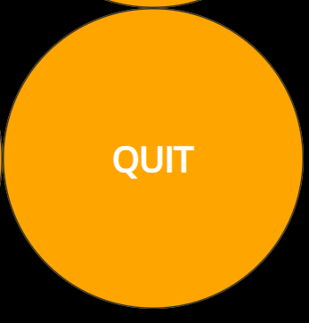
to allow users to abandon the game whenever they wish, giving them a sense of freedom. The
pause
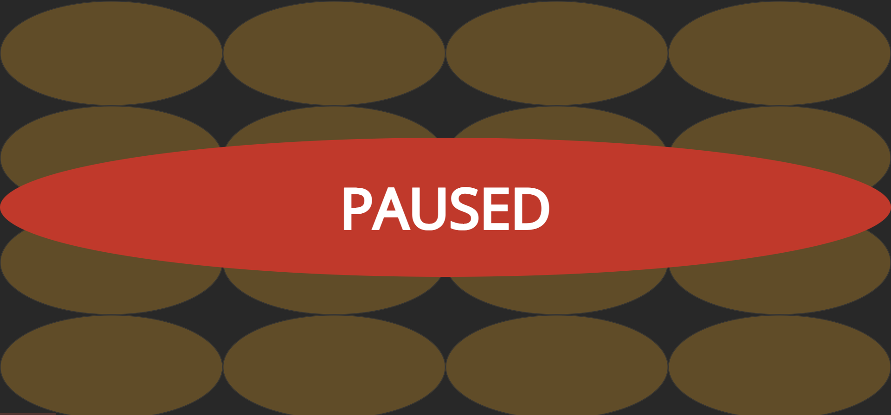
option allows players to take breaks, attend to other duties, or just ponder on their approach without losing their progress, giving them a greater sense of control over the game.
Emotional Design : Emotional design focuses on creating systems that evoke positive emotions and create a strong emotional connection with users. The redesigned Tile Memory game achieves emotional design by offering a visually appealing and engaging interface, along with a variety of game modes and features that cater to different user preferences, making the game more enjoyable and satisfying to play.
Consistency : This principle highlights the need of having a consistent, predictable, and polished user interface. We developed a more aesthetically appealing and simplified playing environment by enhancing the UI and ensuring a lag-free experience. Uniform design components, interactions, and feedback help to make the user experience more intuitive and pleasurable.
Emotional Design : Emotional design focuses on creating systems that evoke positive emotions and create a strong emotional connection with users. The redesigned Tile Memory game achieves emotional design by offering a visually appealing and engaging interface, along with a variety of game modes and features that cater to different user preferences, making the game more enjoyable and satisfying to play.
Error prevention : This principle emphasizes helping users avoid and recover from errors by providing clear guidance and support. By including an instructions button, we have ensured that users understand the game mechanics, reducing the likelihood of mistakes and enhancing the overall experience. By offering clear instructions, users can avoid frustration and enjoy a smoother gaming experience.
Learnability : This principle focuses on making systems easy to learn and use for new users, allowing them to quickly grasp the mechanics and become proficient. By providing an
instruction page
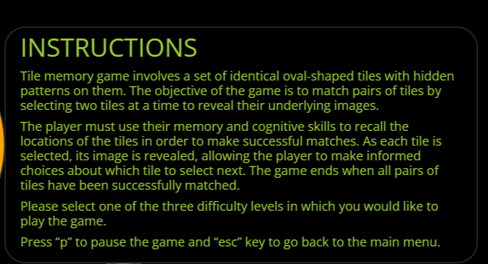
, along with the option to choose between different difficulty levels, we enable users to learn at their own pace and gradually increase the challenge as they become more comfortable with the game. This approach encourages user engagement and long-term satisfaction.
Aesthetic and minimalist design : This concept highlights the significance of designing aesthetically appealing interfaces that are simple and functional. We have most likely built an appealing and simple design that focuses the most essential aspects without needless clutter by optimising the UI. An appealing and simple-to-use interface may boost user satisfaction and encourage them to spend more time playing the game.
Law of Prägnanz : The Law of Prägnanz states that humans tend to perceive and interpret complex visual stimuli in the simplest way possible. The redesigned Tile Memory game adheres to this principle by using a minimalistic design with clean lines, simple shapes, and clear visual cues, making it easy for users to comprehend and interact with the game.
Help and documentation : This principle highlights the need of providing users with accessible and complete help when they require assistance. We have ensured that users have access to assistance and guidance when needed by offering an
instruction button
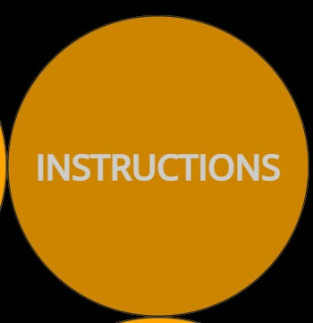
. This is especially valuable for new players or those who need a refresher on the game principles, making the experience more pleasurable and less irritating
Recognition rather than recall : This principle underscores the necessity of building interfaces that allow for quick recognition of parts and functionalities. We used
semiotics
This is a progress bar
(the study of signs and symbols) in the game’s design to enable players grasp the game’s aspects more intuitively, allowing them to engage with the game more efficiently without having to recall the purpose or operation of its numerous features.
Responsive Design : Responsive design is the principle of creating interfaces that adapt to different screen sizes and resolutions, ensuring an optimal user experience across various devices. The redesigned Tile Memory game incorporates responsive design by adjusting the layout, size, and positioning of interface elements, such as the game board and buttons, to fit different screen sizes. This ensures that the game remains visually appealing, functional, and easy to interact with, regardless of the device being used.
User-Centered Design : It is a method of developing goods, systems, and services that focuses on the end-users’ requirements, wants, and limits. Understanding the user’s objectives, tasks, and surroundings, as well as providing solutions that are simple to use, effective, and pleasant to the user, are all part of UCD. The inclusion of
difficulty levels
, the pause function, and the
figures button
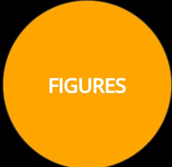
are all instances of UCD since they are meant to suit the user’s needs and wants, giving them more control over their experience, more feedback on their progress, and more prospects for engagement and enjoyment.
Affordance : Affordance refers to design elements that suggest how an object should be used, making it intuitive for users. The redesigned Tile Memory game achieves affordance by using clear visual cues, such as button shapes and labels, which indicate how the game components should be interacted with.
Progressive Disclosure : This principle emphasizes the significance of revealing information and features when they are required, rather than overwhelming consumers with all the facts at once. We used progressive disclosure by providing several difficulty levels and including a menu bar with buttons for directions, figures, play, and quit. This method allows users to acquire essential information and features at their own pace, minimising cognitive strain and increasing enjoyment of the game. Users may explore more features and challenges as they grow more comfortable with the game principles, keeping the experience entertaining and rewarding.
Law of Common Fate : The Law of Common Fate states that humans perceive objects that move together as a group. In the redesigned Tile Memory game, this principle is applied by using synchronized animations and transitions for related game elements, such as the revealing of tiles, enhancing the user’s understanding of the game’s structure and functionality.
Heuristic Evaluation
Based on the course material and what we have learned in the HCI subject, we propose the below-mentioned Evaluation Heuristic.
Heuristic Evaluation by User Goals (HEUG):
The HEUG method is a comprehensive heuristic evaluation approach for evaluating the user experience of a design. It considers eight different parameters, including efficiency, learnability, error prevention and recovery, flexibility, emotional experience, feedback and communication, consistency and accessibility. By evaluating a design using these parameters, designers can gain a detailed understanding of the user experience and identify specific areas for improvement. The HEUG method is designed to be flexible, allowing it to be adapted to the needs of different projects and evaluators. Additionally, the HEUG method goes beyond other heuristic evaluation approaches by including parameters like emotional experience which should be noticed more. By using the HEUG method, designers can create more user-centered and usable designs that meet the needs of their target audience. Overall, the HEUG method is an innovative and effective approach to heuristic evaluation that can be used to improve the user experience of any design.
The HEUG method has the following steps:
Define the evaluation criteria: The eight HEUG method parameters are included in the criteria, which must first be defined. The criteria should be unique to the project and developed to satisfy the requirements of the users.
Gather evaluators: Putting together a group of assessors to examine the design is the next step. These assessors ought to be HCI specialists with in-depth knowledge of the project and the intended audience.
Conduct the evaluation: The evaluators should review the design and evaluate each of the parameters in accordance with the evaluation criteria. Also, the assessors must make notes and offer feedback for each metric.
Assign ratings: Each parameter should receive a rating from the evaluators according to a scale. All assessors should agree on the ratings, which must be based on the evaluation criteria.
Analyze the results: After the evaluation is finished, the findings should be examined to determine the design’s strong and weak points. The evaluations made by the evaluators and the comments made should both be considered in this study.
Provide recommendations: The evaluators should offer suggestions for enhancing the design based on the outcomes analysis. The goal of these suggestions should be to enhance the user experience, and they should be specific and doable.
Iterate and re-evaluate: Based on the suggestions made, the design needs to be revised and improved. Repeat this procedure as necessary to ensure that the design meets user requirements and offers the best possible user experience.
Rating Scale Of HEUG
The HEUG method rating scale is a numerical scale that is used to evaluate each of the eight parameters based on a specific set of criteria. The scale ranges from 1-5, with 1 being poor and 5 being excellent. The ratings assigned to each parameter are based on how well the design addresses the evaluation criteria for that parameter.
Here is a breakdown of the HEUG rating scale:
Poor: The parameter is not addressed or is addressed poorly. The user experience is significantly hindered by this parameter.
Below Average: The parameter is addressed but is not executed well. The user experience is negatively impacted by this parameter.
Average: The parameter is addressed sufficiently but could use improvement. The user experience is satisfactory but not exceptional in this parameter.
Above Average: The parameter is addressed well and enhances the user experience. The user experience is positively impacted by this parameter.
Excellent: The parameter is addressed exceptionally well and significantly enhances the user experience. The user experience is outstanding in this parameter.
The HEUG method includes eight different parameters that are used to evaluate the user experience of a design. These parameters are:
Efficiency: This metric is concerned with how fast and easily users can use the interface to carry out their tasks. While assessing an interface, take into account its usefulness, speed of navigation, and labelling clarity. This entails evaluating how quickly users can carry out tasks, locate what they’re searching for, and use the interface.
Learnability: This measure looks at how easy it is for users to acquire used to the interface. Assess the interface’s consistency, usability, and availability of resources for assistance. This involves evaluating how easily users can understand the interface, how fast they take up using it, and how well the design supports their mental models.
Error Prevention and Recovery: This metric focuses on how effectively the user interface prevents problems and provides means for users to fix them. Verify the user interface (UI) for components like undo/redo capabilities, clear error warnings, and understandable feedback. This is evaluating how well the user interface guides users in avoiding errors, how quickly and simply users may bounce back from failures, and how well the user interface prevents user frustration or confusion when errors occur.
Flexibility: This criterion focuses on how well the interface takes into account the various demands and preferences of users. Consider the customization possibilities, accessibility, and interoperability with other platforms or devices while evaluating the interface. This involves assessing how well the interface accommodates various user requirements and preferences, functions on a variety of hardware platforms, and changes to accommodate various user circumstances.
Emotional Experience: This parameter focuses on how the interface affects the user experience. Take into account the attractiveness, personality, and degree of emotional engagement of the interface. A portion of this is assessing how well the user interface conveys the identity or personality of the product or service, makes an emotional connection with the user, and produces a positive emotional experience for consumers.
Feedback and Communication: This measure looks at how well the user interface informs users and provides feedback on their activities. Think about how responsive the interface is, how it responds to user input, and whether there are resources available to help. This entails evaluating how well the interface updates the user on its state and progress, how well it responds to inputs from and actions carried out by the user, and how well it provides the user with valuable information when necessary.
Consistency: This parameter evaluates the consistency of the behaviour and layout of the interface. Visual coherence, interaction pattern coherence, and terminology coherence are all things to look for in an interface. In order to do this, one must evaluate how well the interface makes use of standardised visual elements, interaction styles, and processes, as well as standardised language usage and labelling.
Accessibility:This parameter’s primary focus is on the interface’s usability for users with different skills and limitations. The usability of the interface for users with different requirements, adherence to accessibility guidelines, and support for assistive devices should all be taken into account. This involves evaluating the interface’s usability for users with visual, auditory, motor, and cognitive impairments as well as how well it complies with accessibility guidelines like WCAG and provides alternative modes of engagement.
Rating Tile Memory Game Redesign on HEUG:
Evaluation of the Tile Memory Game redesign based on the aforementioned HEUG principles are as follows:
NOTE: This section has interactive sliders for the readers to evaluate according to their will
Efficiency: We would give the game an “Excellent” rating for efficiency based on the elements that determine a tile game. The player won’t get lost while playing since the game is made with an intuitive user interface that is simple to use and has no navigational lags. The game is incredibly effective since it loads rapidly and reacts to user input swiftly.
5.00
The score for efficiency is 5.00
Current Parameter Rating: Excellent
Current Parameter Rating: Above Average
Current Parameter Rating: Average
Current Parameter Rating: Below Average
Current Parameter Rating: Poor
Total Heuristic score 4.25
Learnability: The game’s learnability is deemed to be “Above Average.” The interface of the system is fairly easy to understand after the redesign. The game now has fairly simplistic and well made UI for any player to easily understand the game.
4.00
The score for Learnability is 4.00
Current Parameter Rating: Excellent
Current Parameter Rating: Above Average
Current Parameter Rating: Average
Current Parameter Rating: Below Average
Current Parameter Rating: Poor
Total Heuristic score 4.25
Error Prevention and Recovery: The error prevention and recovery mechanism of the tile game is rated as “Above Average”. The implementation of the figures menu with all the figures reduces the scope for errors because the user can analyze the what he/she needs to do to improve his gameplay.
4.00
The score for Error Prevention and Recovery is 4.00
Current Parameter Rating: Excellent
Current Parameter Rating: Above Average
Current Parameter Rating: Average
Current Parameter Rating: Below Average
Current Parameter Rating: Poor
Total Heuristic score 4.25
Flexibility: In this category we would give the tile game an “Above Average” grade since it gives players a fair degree of versatility. The game’s several difficulty settings let players adjust the challenge level to their preferences. The ability to halt and continue the game at any moment gives players more freedom.
4.00
The score for Flexibility is 4.00
Current Parameter Rating: Excellent
Current Parameter Rating: Above Average
Current Parameter Rating: Average
Current Parameter Rating: Below Average
Current Parameter Rating: Poor
Total Heuristic score 4.25
Emotional Experience: The game seems to be at an “Above Average” level of emotional experience. The emotional experience of the game is now much improved with a better UI, and inclusion of difficulty modes so user can play at his own pace without getting frustrated.
4.00
The score for Emotional Experience is 4.00
Current Parameter Rating: Excellent
Current Parameter Rating: Above Average
Current Parameter Rating: Average
Current Parameter Rating: Below Average
Current Parameter Rating: Poor
Total Heuristic score 4.25
Feedback and Communication: In terms of feedback and communication, we will give the game an “Excellent” rating since it gives players fast access to clear and better structured feedback than before, letting them know which tiles they have flipped improperly through animations. Also, with the implementation of the time progress bar users can clearly see how much time they have left to complete the round. This feedback is provided in an easy-to-understand way without interfering with the game’s rhythm. The game also makes sure that the player is aware of the rules and game objectives by providing clear instructions and recommendations at the start of each level.
5.00
The score for Feedback and Communication is 5.00
Current Parameter Rating: Excellent
Current Parameter Rating: Above Average
Current Parameter Rating: Average
Current Parameter Rating: Below Average
Current Parameter Rating: Poor
Total Heuristic score 4.25
Consistency: The game is highly consistent with its interface and controls. The UI of the three games have been kept consistent to each other. Because everything is clearly structured and labelled, the user does not experience any confusion while navigating through the many levels and options. Therefore will give an “Excellent” rating to the consistency of the game.
5.00
The score for Consistency is 5.00
Current Parameter Rating: Excellent
Current Parameter Rating: Above Average
Current Parameter Rating: Average
Current Parameter Rating: Below Average
Current Parameter Rating: Poor
Total Heuristic score 4.25
Accessibility: : The game’s controls are likewise restricted to mouse clicks, making it simple to operate for individuals who are accustomed to using a mouse. However it can be difficult for people who prefer keyboard controls or for people with motor limitations who might have trouble using a mouse. Accessibility is further constrained by the absence of aural signals for users who are visually impaired. As a result, will rate accessibility as “Average”.
3.00
The score for Accessibility is 3.00
Current Parameter Rating: Excellent
Current Parameter Rating: Above Average
Current Parameter Rating: Average
Current Parameter Rating: Below Average
Current Parameter Rating: Poor
Total Heuristic score 4.25
Future Plans on Further Redesign
Based on the Final Evaluation of the System we think the following future redesign can help the game improve further:
Even if the redesigned game has better learnability, there is still room for improvement. We suggest introducing an interactive lesson for brand-new customers to remedy this. The tutorial would lead the user through each menu and game feature, allowing them to learn how to play the game fast and efficiently. The user experience would be much enhanced with this feature, making it simpler for new players to get into the game and enjoy it.
The game’s error prevention and recovery mechanics still have room for development. A “hint” button that can aid users in matching a set of tiles is one possible option. The game would disclose a pair of matching tiles if a player used the hint button, but the figures for that round would not be added to the player’s overall score. This feature would aid players in avoiding mistakes and offer an extra layer of assistance to those who might be having difficulty with the game. The hint button would ultimately improve the user experience and player happiness with the game.
We may add more customizability choices to the game to increase its flexibility and let players create a unique gaming experience. For instance, we may add unique themes and tiles that let players customise the game to their particular tastes. We can guarantee that customers may enjoy the game in a way that matches their own style and interests by providing a variety of customization choices. In the end, this will boost user pleasure and raise game engagement.
We may add sound effects that provide the player feedback while playing the game to improve its emotional impact. This may feature distinct sound effects for successful and unsuccessful matches as well as a sound alert when the round is down to the last ten seconds or fewer. The user will feel more engaged and a feeling of urgency thanks to these sound effects, which will also increase the game’s immersion and excitement.
We may include a blind option in the game to increase accessibility for people who are blind or visually challenged. The tiles in this mode would have unique acoustics that needed to be matched in order to play the game. Instead of hovering the mouse over the tiles, the user may move between them by using the arrow keys on the keyboard. The game would play a sound and move the cursor back to the initial tile each time the user pressed enter on a tile, allowing them to predict another tile with the same sound. By implementing a blind mode, we can imporve the accessability of the game by making it more accessible to a wider range of users, creating a more inclusive gaming experience.